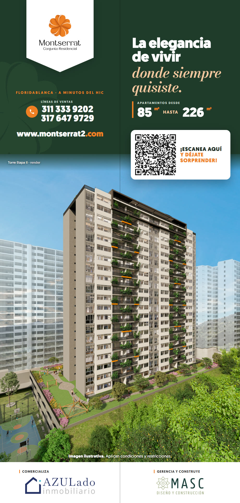
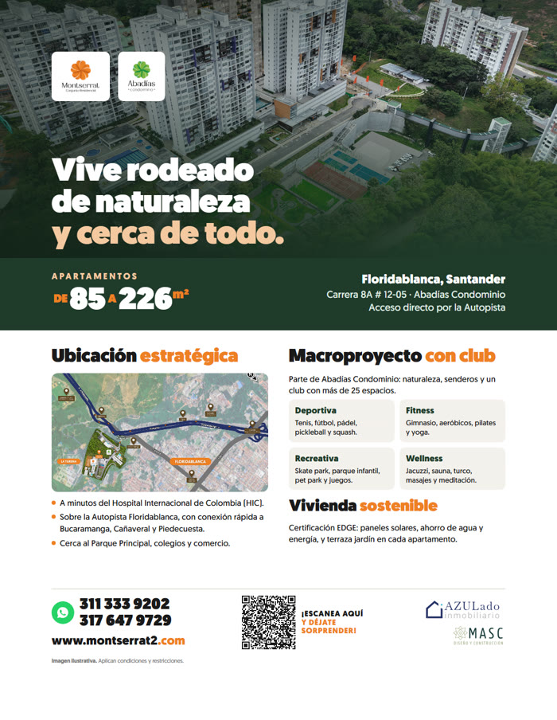

Manual de marcaMontserrat y Abadías
Guía para usar correctamente los logotipos, colores, tipografías y recursos gráficos de Montserrat Conjunto Residencial y de Abadías Condominio en piezas impresas y digitales.
Un hogar rodeado de naturaleza y cerca de todo.
Montserrat Etapa II es un proyecto residencial en Floridablanca, parte del macroproyecto Abadías Condominio: naturaleza, un club con más de 25 espacios y una ubicación estratégica a minutos del HIC y la Autopista.
Naturaleza
Senderos, zonas verdes y terrazas jardín. La flor del imagotipo nace de esta idea.Bienestar
Club con zonas deportivas, fitness, recreativas y wellness para toda la familia.Diseño
Arquitectura moderna, espacios flexibles y certificación EDGE de sostenibilidad.El logotipo Montserrat
Se compone de tres partes que siempre van juntas: el imagotipo (la flor de cinco pétalos en naranja con volumen), el logotipo "Montserrat" y el descriptor "Conjunto Residencial".
| Elemento | Uso |
|---|---|
| Imagotipo (flor) | Puede usarse solo como recurso gráfico o avatar de redes. Nunca se cambia su forma ni su degradado. |
| Logotipo | Es un dibujo vectorial: no se reescribe con ninguna tipografía. |
| Descriptor | Acompaña siempre al logotipo en la versión principal. |
Área de protección y tamaño mínimo
La unidad de medida X es la altura de la letra "M" del logotipo. Alrededor del logo se deja un espacio libre mínimo de 1X, sin textos, bordes ni otros logos.
Zona rayada = área de protección (1X por lado).
| Medio | Ancho mínimo |
|---|---|
| Impreso | 30 mm de ancho (el descriptor debe seguir siendo legible) |
| Digital | 150 px de ancho |
| Gran formato (vallas, pendones) | Mínimo el 15 % del ancho de la pieza, sobre fondo blanco o escudo blanco |
| Solo imagotipo (flor) | 12 mm impreso · 32 px digital |
Versiones permitidas
Principal · a color sobre blancoMonocromática blancaMonocromática negraBlanca sobre naranjaLo que no se debe hacer
Paleta de color
El naranja de la flor es el color de identidad. El verde bosque es el fondo de campaña y conecta con la naturaleza de Abadías.
Colores de marca
RGB 237 128 35
CMYK 7 59 90 1
RGB 196 93 24
CMYK 20 69 89 9
RGB 31 59 42
CMYK 82 49 74 60
RGB 38 70 47
CMYK 82 46 78 53
Complementarios
RGB 244 201 160
CMYK 7 25 42 0
RGB 243 241 236
CMYK 8 7 10 0
RGB 26 26 26
CMYK 72 65 58 76
RGB 255 255 255
CMYK 0 0 0 0
Proporción de uso
Verde 45 % · blanco 30 % · naranja 15 % (acentos: flechas, cifras, botones) · durazno 10 % (frases en cursiva).
Tipografías
Pesos: Light, Book, Medium, Bold, Black y Ultra. Es la letra de toda la comunicación: titulares, cifras, datos y textos.
Solo en cursiva, para la segunda línea de las frases ("Tu hogar.", "donde siempre quisiste."). Nunca en textos largos ni datos.
Jerarquía
| Nivel | Fuente | Ejemplo |
|---|---|---|
| Titular | Geomanist Ultra / Black | Tu espacio. Tu estatus. |
| Frase de acento | Bodoni Moda cursiva · durazno | Tu hogar. |
| Antetítulo | Geomanist Bold · mayúsculas · tracking amplio · naranja | FLORIDABLANCA · A MINUTOS DEL HIC |
| Cifras | Geomanist Ultra · "m²" en naranja | 85 A 226m² |
| Texto | Geomanist Book | Apartamentos con terraza jardín y club. |
Recursos gráficos
- La flor de marca de agua se usa grande y recortada por el borde, en #26462F sobre #1F3B2A; nunca en naranja ni encima de textos importantes.
- El escudo blanco cuelga del borde superior de la pieza y aloja el logo a color.
- Los teléfonos llevan el ícono de WhatsApp en verde (#25D366) y nunca la palabra "WhatsApp".
Estilo de fotografía



Cómo hablamos
Sí
Cercano, aspiracional y claro. Frases cortas. Tuteamos."Tu espacio. Tu estatus. Tu hogar."
"Vive rodeado de naturaleza y cerca de todo."
"¡Escanea aquí y déjate sorprender!"
No
Tecnicismos, exceso de texto ni promesas que no se puedan cumplir. Las áreas siempre se escriben como "de 85 a 226 m²" o "desde 85 m² hasta 226 m²".Logotipo Abadías
Abadías es el macroproyecto y club donde se ubica Montserrat. Su trébol verde comparte la construcción de la flor de Montserrat: son marcas hermanas.
Abadías Condominio · principal Abadías Club · para el clubMonocromática blanca
Abadías Club · para el clubMonocromática blancaRGB 125 183 66
CMYK 59 9 89 0
RGB 0 136 66
CMYK 85 24 93 9
Montserrat + Abadías
- Ambos logos con la misma altura visual, separados por una línea vertical gris (#D9D5CE) y un espacio de 1X a cada lado.
- En piezas de Montserrat, Montserrat va primero (izquierda o arriba). En piezas del club, Abadías va primero.
- Nunca se fusionan, se superponen ni se cambian sus colores para que combinen.
Grupo desarrollador y fiducia


Van siempre en este orden, sobre fondo blanco, en la franja inferior de la pieza y con su rol escrito encima en mayúsculas con línea naranja.
Aplicaciones



Datos y textos obligatorios
| Dato | Cómo se escribe |
|---|---|
| Líneas de ventas | 311 333 9202 · 317 647 9729 (con ícono de WhatsApp) |
| Web | www.montserrat2.com |
| Áreas | De 85 a 226 m² · Apartamentos desde 85 m² hasta 226 m² |
| Sala de ventas | Carrera 8A # 12-05, Abadías Condominio, Floridablanca, Santander |
| Nota legal corta | Imagen ilustrativa. Aplican condiciones y restricciones. |
| QR | Estáticos, apuntan a www.montserrat2.com (no vencen) |